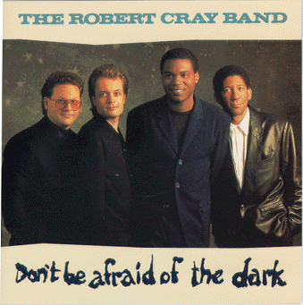

Don't Be Afraid of the Dark - The Robert Cray Band

 Songs on the CD
Songs on the CD
-
Don't Be Afraid of the Dark (D. Walker)
-
Don't You Even Care? (R. Cray)
-
Your Secret's Safe With Me (D. Walker - P. Boe)
-
I Can't Go Home (R. Cray)
-
Night Patrol (D. Amy)
-
Acting This Way (P. Boe - R. Cousins)
-
Gotta Change the Rules (R. Cray)
-
Across the Line (D. Amy - R. Cray - O. Washington - P. Boe - D. Olson)
-
At Last (R. Cray - P. Sermersheim)
-
Laugh Out Loud (D. Walker)
The Robert Cray Band
Robert Cray - Vocals & Guitar
Richard Cousins - Bass
Peter Boe - Keyboards
David Olson - Drums
Horns arranged and played by The Memphis Horns
Wayne Jackson - trumpet & trombone
Andrew Love - Tenor Sax
David Sanborn - Alto Sax on "Acting This Way"
Some credits:
© 1988 PolyGram Records, Inc
810 Seventh Ave
New York, NY, 10019
Producers - Bruce Bromberg and Dennis Walker
Direction - Mike Kappus - The Rosebud Agency
Art Direction - Mike Bays
Cover Design - Chris Thmpson
Photography - Deborah Feingold
Back to my Cray page
Created: 12/4/95
By: rwhiffen
Mod: 2/26/97